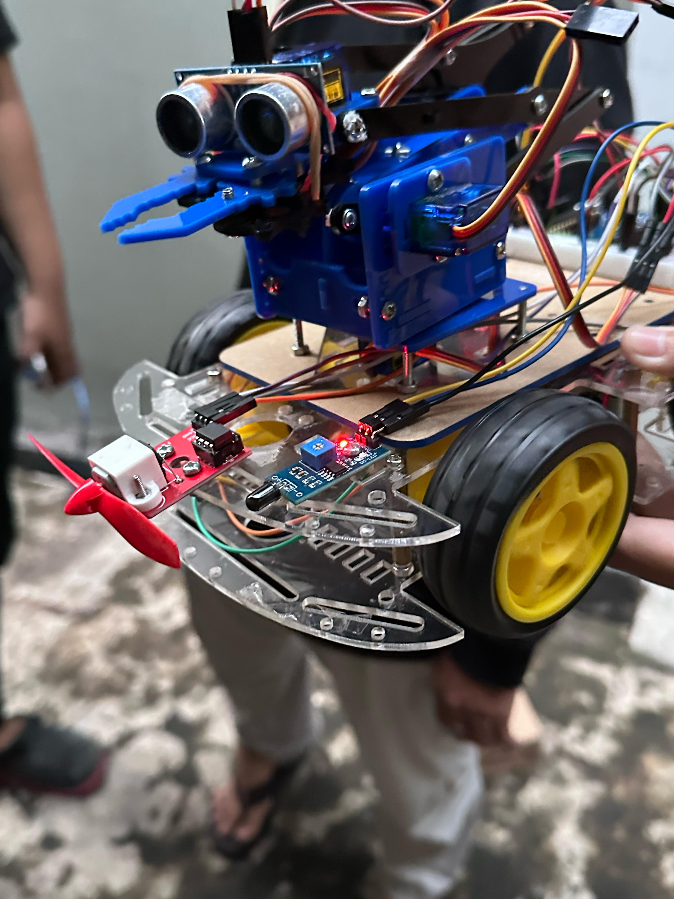

Autonomous Robotic Car
Engineered an autonomous vehicle that achieved a 95% success rate in obstacle avoidance by implementing an active scanning system with a servo-mounted ultrasonic sensor. Implemented a dual-sensor hazard system (flame and temperature) that achieved an 85% detection rate in test conditions, triggering an automated fan response.
Demo Videos
This video has no sound.
This video has no sound.